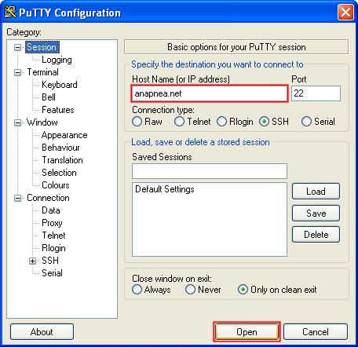
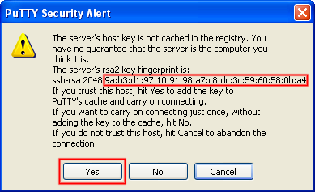
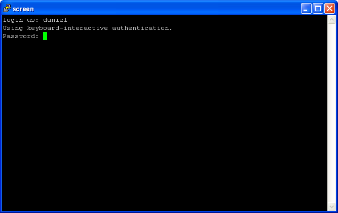
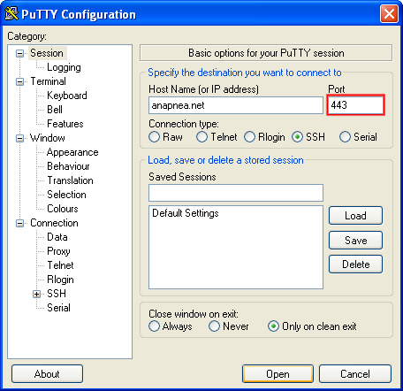

Connecting with PuTTY (Windows)
PuTTY is easily the most popular Windows SSH client, and is what we'll use to connect to anapnea.net.
(
Not using Windows? Linux and Mac guide here.)
Firstly,
download PuTTY, and then open it. You should see the window below.
Type anapnea.net into the Host Name box. The default settings should work just fine. Click Open to get started.

PuTTY will now ask you to verify anapnea.net's fingerprint. It will only ask you this once, when you first connect.
The signature should be exactly the same as the one shown below. For a more in-depth comment on fingerprints, please see the bottom of the page.

The prompt login as: will be displayed. Type the username you chose when you spoke to jigglypuff, and then press enter.
PuTTY will inform you that it's using keyboard-interactive authentication. This is a fancy name for "I'm going to ask you your password, and you're going to type it in".
So, type in your current password as the Password: prompt. If this is your first time, your password will be in an email - remember, you told jigglypuff what your email address was.
Note that in the name of security, nothing will appear as you type letters in - not even asterisks.
Finally, if you are having trouble logging in, you may want to try typing your password as you read it from the email rather than copying and pasting it - you might accidentally copy a space and that would mess it up.

All connected! Proceed to use the shell!
The default port for SSH is 22, but Anapnea runs SSH on port 443 as well, because when using some internet connections all traffic on port 22 is blocked.
(Port 443 is normally used for HTTPS but we use it for SSH. Because 443 is used for HTTPS it is completely impractical for someone to block it.)
So if you're having trouble connecting, you can try changing the port, as shown below. Once you've changed the port, connect as normal.

A short note on signatures.
All SSH Traffic is encrypted. But how do you know. TBA.